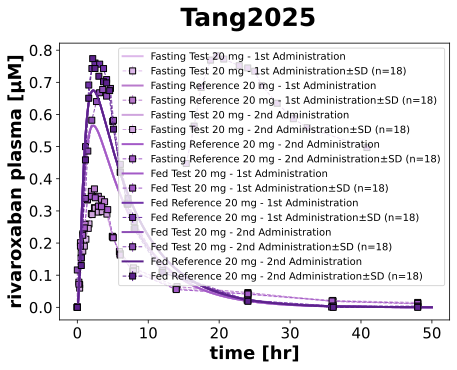

|  |
../../../../experiments/studies/tang2025.py
from typing import Dict
from sbmlsim.data import DataSet, load_pkdb_dataframe
from sbmlsim.fit import FitMapping, FitData
from sbmlutils.console import console
from pkdb_models.models import rivaroxaban
from pkdb_models.models.rivaroxaban.experiments.base_experiment import (
RivaroxabanSimulationExperiment,
)
from pkdb_models.models.rivaroxaban.experiments.metadata import Tissue, Route, Dosing, ApplicationForm, Health, \
Fasting, RivaroxabanMappingMetaData, Coadministration
from sbmlsim.plot import Axis, Figure
from sbmlsim.simulation import Timecourse, TimecourseSim
from pkdb_models.models.rivaroxaban.helpers import run_experiments
class Tang2025(RivaroxabanSimulationExperiment):
"""Simulation experiment of Tang2025."""
formulations = ["T1", "R1", "T2", "R2"]
formulation_labels = {
"T1": "Test 20 mg - 1st Administration",
"R1": "Reference 20 mg - 1st Administration",
"T2": "Test 20 mg - 2nd Administration",
"R2": "Reference 20 mg - 2nd Administration",
}
fasting_states = ["Fasting", "Fed"]
bodyweights = {
"Fasting": 64.2, # kg
"Fed": 65.6, # kg
}
fraction_absorbed = {
"Fasting": RivaroxabanSimulationExperiment.fasting_map["fasted"],
"Fed": RivaroxabanSimulationExperiment.fasting_map["fed"],
}
colors = {
# Fasting
"Fasting_R1": "#B97ACC", # medium purple
"Fasting_T1": "#DDB8EA", # light lavender
"Fasting_R2": "#A35AC7", # rich purple
"Fasting_T2": "#CFA4DD", # lavender variant
# Fed
"Fed_R1": "#7132A8", # deep violet
"Fed_T1": "#A35AC7", # rich purple
"Fed_R2": "#5C228C", # deeper purple to distinguish from R20_1
"Fed_T2": "#8D4EB5", # mid-palette purple between T20_1 and T20_1 fasting
}
def datasets(self) -> Dict[str, DataSet]:
dsets = {}
for fig_id in ["Fig1"]:
df = load_pkdb_dataframe(f"{self.sid}_{fig_id}", data_path=self.data_path)
for label, df_label in df.groupby("label"):
dset = DataSet.from_df(df_label, self.ureg)
dset.unit_conversion("mean", 1 / self.Mr.riv)
dsets[label] = dset
# console.print(dsets.keys())
return dsets
def simulations(self) -> Dict[str, TimecourseSim]:
Q_ = self.Q_
tcsims = {}
for fasting_state in self.fasting_states:
for formulation in self.formulations:
tcsims[f"po_{fasting_state}_{formulation}"] = TimecourseSim(
[Timecourse(
start=0,
end=50 * 60, # [min]
steps=500,
changes={
**self.default_changes(),
"BW": Q_(self.bodyweights[fasting_state], "kg"),
"PODOSE_riv": Q_(20, "mg"),
"GU__F_riv_abs": Q_(self.fraction_absorbed[fasting_state], "dimensionless"),
},
)]
)
return tcsims
def fit_mappings(self) -> Dict[str, FitMapping]:
mappings = {}
for fasting_state in self.fasting_states:
for formulation in self.formulations:
mappings[f"fm_po_{fasting_state}_{formulation}"] = FitMapping(
self,
reference=FitData(
self,
dataset=f"rivaroxaban_{fasting_state}_{formulation}",
xid="time",
yid="mean",
yid_sd="mean_sd",
count="count",
),
observable=FitData(
self, task=f"task_po_{fasting_state}_{formulation}", xid="time", yid=f"[Cve_riv]",
),
metadata=RivaroxabanMappingMetaData(
tissue=Tissue.PLASMA,
route=Route.PO,
application_form=ApplicationForm.TABLET,
dosing=Dosing.SINGLE,
health=Health.HEALTHY,
fasting=Fasting.FASTED if fasting_state == "Fasting" else Fasting.FED,
coadministration=Coadministration.NONE,
),
)
return mappings
def figures(self) -> Dict[str, Figure]:
fig = Figure(
experiment=self,
sid="Fig1",
name=self.__class__.__name__,
)
plots = fig.create_plots(
xaxis=Axis(self.label_time, unit=self.unit_time), legend=True
)
plots[0].set_yaxis(self.label_riv_plasma, unit=self.unit_riv)
for fasting_state in self.fasting_states:
for formulation in self.formulations:
# simulation
plots[0].add_data(
task=f"task_po_{fasting_state}_{formulation}",
xid="time",
yid=f"[Cve_riv]",
label=f"{fasting_state} {self.formulation_labels[formulation]}",
color=self.colors[f"{fasting_state}_{formulation}"],
)
# data
plots[0].add_data(
dataset=f"rivaroxaban_{fasting_state}_{formulation}",
xid="time",
yid="mean",
yid_sd="mean_sd",
count="count",
label=f"{fasting_state} {self.formulation_labels[formulation]}",
color=self.colors[f"{fasting_state}_{formulation}"],
)
return {
fig.sid: fig,
}
if __name__ == "__main__":
out = rivaroxaban.RESULTS_PATH_SIMULATION / Tang2025.__name__
out.mkdir(parents=True, exist_ok=True)
run_experiments(Tang2025, output_dir=Tang2025.__name__)
{kind=link}